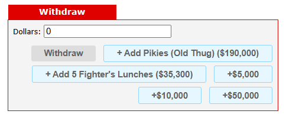

What does it do?
The Bank Helper automatically injects specialized buttons into your Piggy Bank interface. Instead of manually typing out specific values (like the exact cost of 5 Fighter's Lunches based on your current level), these buttons allow you to deposit or withdraw that precise amount with a single click.
Note: By default, it adds a "5 Fighter's Lunches" goal, but more customization options are planned for the future.
How to use it
- Navigate to your Piggy Bank via the City.
- Look beneath the standard Deposit/Withdraw buttons.
- You will see a new button labeled with a specific goal (e.g., Withdraw: 5 Fighter's Lunches ($X)).
- Simply click the button, and the exact amount required will be populated into the text box and submitted automatically.
Visual Example
Below is an example of what the button looks like in your Piggy Bank interface:

How to disable it
If you prefer a clean bank interface, you can easily turn this feature off:
- Go to the Preferences page in-game.
- Scroll down to the Hobo Helper Settings section.
- Uncheck the box next to Enable Bank Goals and hit Save.